Every limit, live
5-hour session, weekly, weekly Opus, Codex windows, Gemini model quotas and Copilot premium requests, each with a reset countdown and history charts.
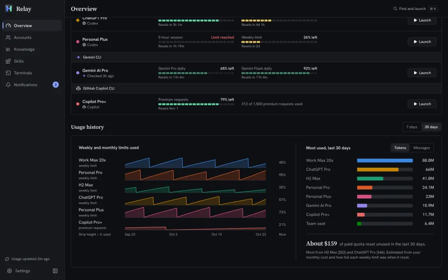
Relay keeps every Claude, ChatGPT, Gemini and Copilot account you pay for signed in side by side, shows what is left of every limit, and opens the right CLI with the account you pick.
v0.2.1 for Windows, macOS and Linux.
Free Open source Windows, macOS, Linux Early software
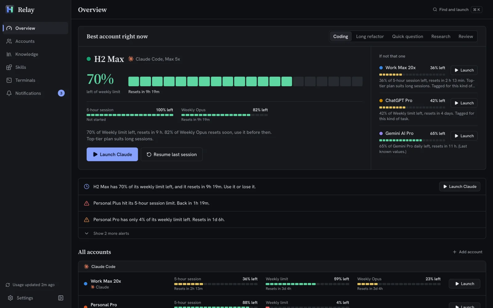
Works with
You pay for more than one plan.
You hit a limit mid-task.
Half your weekly quota resets unused.
Logging out and back in, guessing which account still has room, watching a reset come and go. Relay keeps every account signed in side by side and tells you which one to use next.
Continue on another account
01 / 04
Claude Code is writing a migration in your orders project, in a pane of Relay’s terminal grid. The meter in the pane header shows what this account has left.
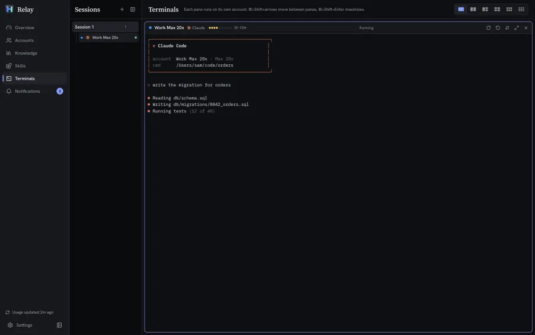
02 / 04
The 5-hour session runs out at test 12 of 40. Relay notices, tells you, and offers the account with the most left: Continue on H2 Max.
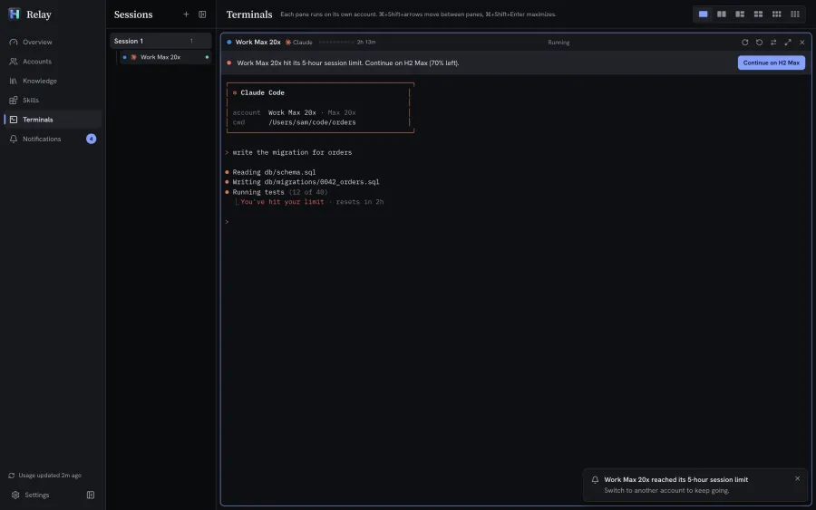
03 / 04
Or choose one yourself. Every other account of the same tool is listed with what it has left; signed-out ones are greyed out.
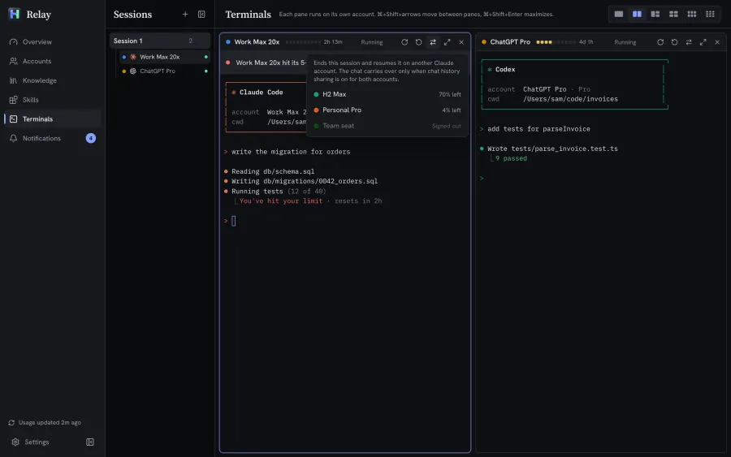
04 / 04
The session ends and resumes on H2 Max in the same folder, and the tests finish. The chat carries over when chat history sharing is on for both accounts.
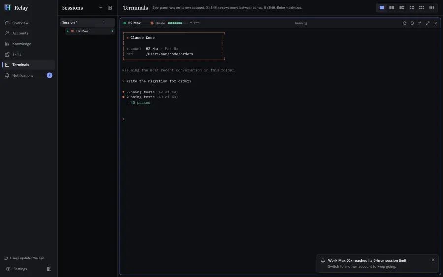
Terminal grid
Run up to nine AI CLIs side by side, each pane on its own account with its own meter. Keep several sessions, each with its own layout, in a list beside the grid. Hidden sessions keep running.
One click
When a pane’s account runs out, the pane offers the next account of the same tool with quota left. Click it and the work carries on in the same folder.
Features
5-hour session, weekly, weekly Opus, Codex windows, Gemini model quotas and Copilot premium requests, each with a reset countdown and history charts.

Each account gets its own config home (CLAUDE_CONFIG_DIR, CODEX_HOME…), so switching never means logging out.
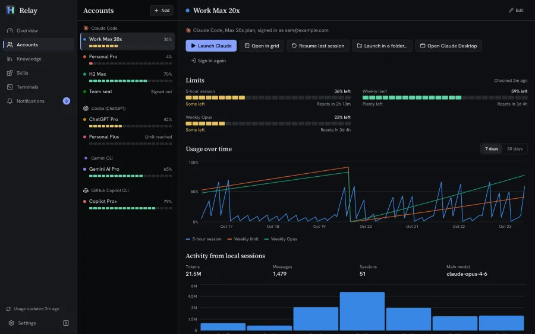
Relay detects installed CLIs and the config folders already on your disk, including side-by-side ones like ~/.claude-work. Importing keeps each one where it is.
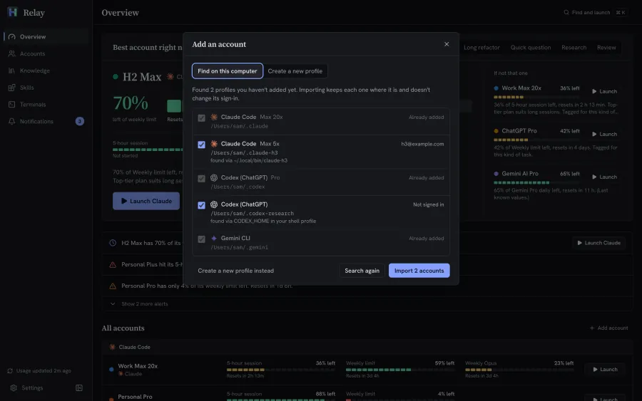
Press Ctrl K (⌘ K on a Mac), type an account or screen name and press Enter. Your terminal opens with that account.
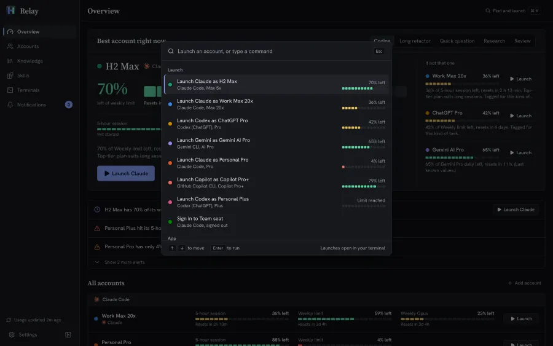
Export accounts, skills and preferences to one .relay file and import it on Windows, macOS or Linux. Sign-ins are optional and encrypted. Import only adds.
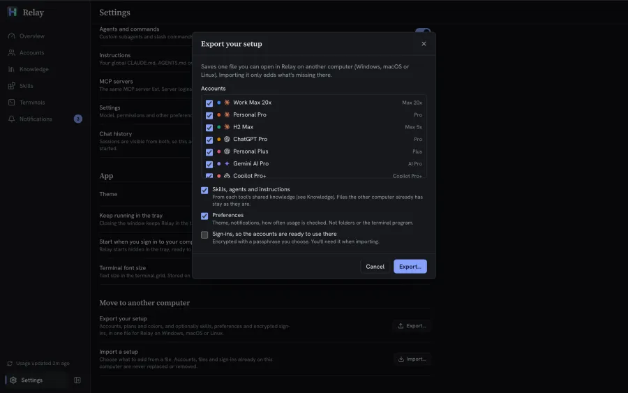
A notification when an account is nearly out, hits a limit or comes back, and when lots of a weekly or monthly limit is about to reset unused.
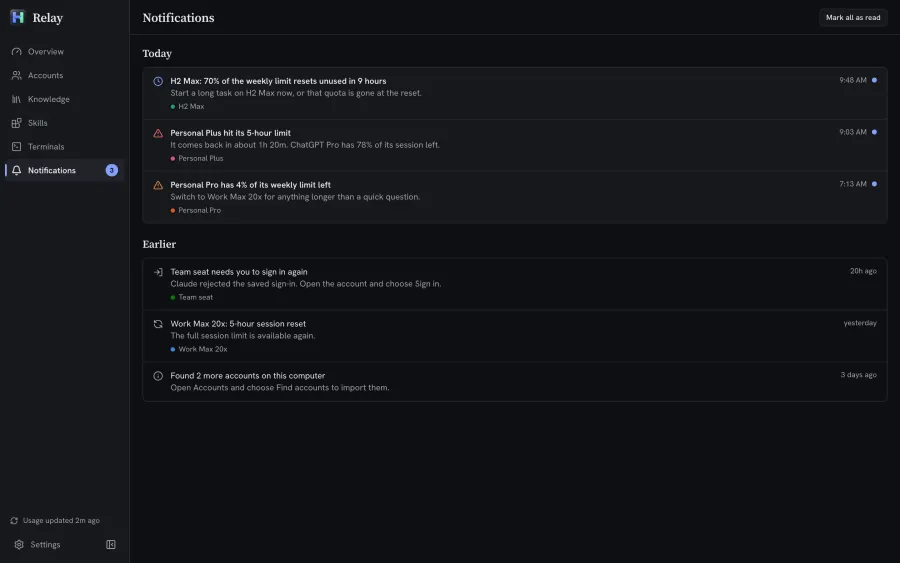
Browse or search the public skills.sh directory, read a skill’s SKILL.md and install it for any of your tools in one step. Nothing already there is overwritten.
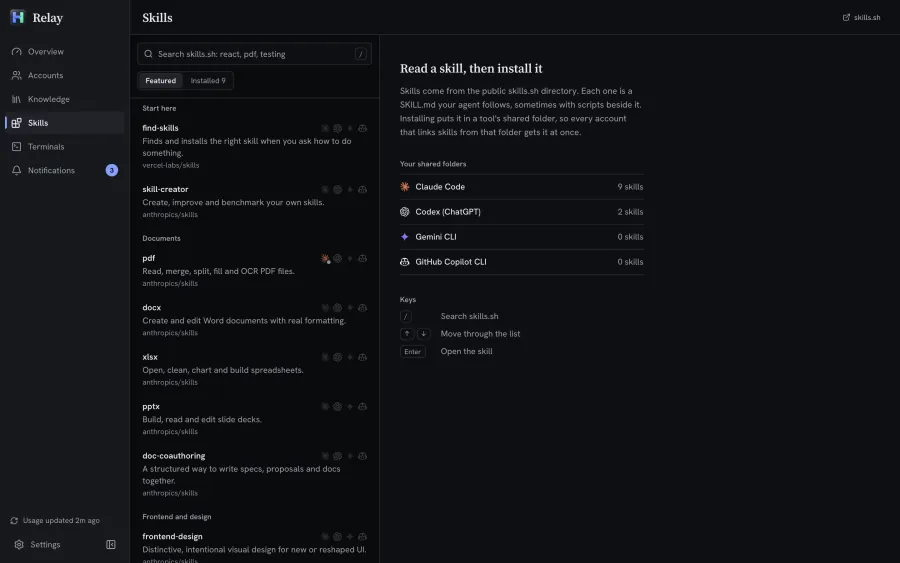
Each tool gets one shared profile for skills, agents, instructions, plugins and settings. Every account links to it, so they all work the same way. Sign-in tokens are never shared.
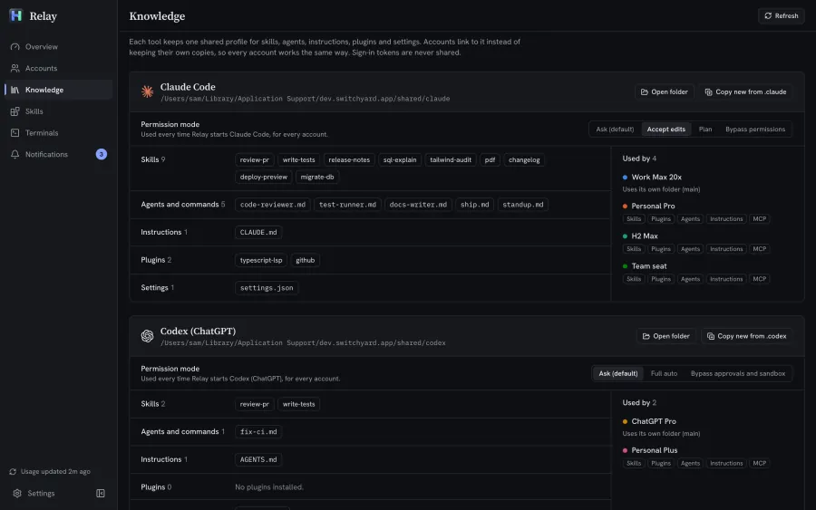
Tools
Relay uses each tool’s own sign-in and its official CLI. It doesn’t proxy your prompts or replace any app.
Planned next Cursor, Antigravity, Kiro, Amp and OpenRouter. Adding a provider starts with one Rust adapter, so pull requests are welcome.
Privacy
To read live limits, Relay sends each account’s own saved sign-in to that provider’s own servers (its usage, profile and sign-in renewal endpoints), and nowhere else.
Relay never copies or links credential files between accounts, even when they share skills, settings or chat history.
Turn it off in Settings and Relay works from local session logs only.
Relay’s data lives in its own folder on your disk. Every CLI folder stays exactly as it was.
Early software
Relay is a young open-source project, built and tested by one person. The usage numbers come from provider endpoints that can change or break without notice, so treat what it shows as a guide, not a guarantee.
The installers aren’t code-signed yet, so Windows and macOS warn you the first time you open Relay. That’s expected, and getting past it takes a couple of clicks.
Yes. Relay is open source under the MIT license, with no paid tier and no account to create. You keep paying your AI providers as you do now, just with less of it going to waste.
Relay does not get around any limit. Each account signs in through the tool’s own login and runs the official CLI, and Relay only reads the limits each provider already shows you. Whether you may hold several accounts with one provider is up to that provider, so check their terms for the plans you use.
No. It reads usage numbers and local session statistics such as token counts. It never sends your prompts, chats or code anywhere, and there is no Relay server to send them to.
Each sign-in stays where its CLI keeps it: in that account’s own config folder, or in the macOS Keychain for Claude Code on a Mac. Relay never copies or links credential files between accounts, even when they share skills, settings or chat history.
The only time Relay writes them anywhere else is an export you ask for, and only if you tick Sign-ins. They are then encrypted with a passphrase you choose.
The installers aren’t code-signed or notarized yet, so your system doesn’t recognize the developer. On Windows, choose More info, then Run anyway. On macOS, open System Settings > Privacy & Security and choose Open Anyway. Only download Relay from its GitHub Releases page. Step-by-step install guide.
Not yet. Relay is early software built and tested by one person, and it almost certainly has bugs. The usage numbers come from provider endpoints that can change without notice, so treat them as a guide. What early software means here.
Claude Code (Pro, Max 5x, Max 20x, Team, plus Claude Desktop), Codex CLI (ChatGPT Plus, Pro, Team), Gemini CLI (Google AI Pro, Ultra, free tier) and GitHub Copilot CLI (Copilot Pro, Pro+, Business). Cursor, Antigravity, Kiro, Amp and OpenRouter are planned.
When a pane in the terminal grid hits its limit, it offers the account of the same tool that is the best pick right now, or you choose another from the list. One click ends the session and resumes it on that account, in the same folder.
The chat itself carries over only when chat history sharing is on for both accounts. If it isn’t, the pane offers to turn it on.
They come from each provider’s own usage endpoints, some official and some only observed, and those can change without notice. Live usage works for Claude and Codex and is best-effort for Gemini and Copilot. With live usage turned off, Relay works from local session logs instead. Treat the numbers as a guide, not a guarantee.
Launching works offline. Live limits need the network, because they come from each provider’s usage endpoint. Without it, Relay shows the last numbers it saw and when it saw them.
Windows 10 and 11 (.exe or .msi), macOS on Apple Silicon and Intel (.dmg), and Linux (.AppImage for any distribution, .deb for Debian and Ubuntu, .rpm for Fedora).
No. Each account Relay creates gets its own config folder, and your main folders such as ~/.claude and ~/.codex stay where they are and keep working as before. Importing accounts Relay finds keeps each one where it is and doesn’t change its sign-in. Uninstalling leaves every CLI folder exactly as it was.
Yes. Export your accounts, skills and preferences to a .relay file and import it in Relay on Windows, macOS or Linux. Sign-ins are optional and encrypted with a passphrase you choose. Importing only adds: nothing already on the computer is replaced.
There’s no automatic updater yet. Download the new version from Releases and install it over the old one. Your accounts, settings and history carry over.
Open an issue on GitHub with what you did and what happened. For a security problem, please don’t post details publicly; use GitHub’s private security advisory form instead. Pull requests are welcome too, including new providers.
More providers (Cursor, Antigravity, Kiro, Amp, z.ai and OpenRouter credit balance), routing rules per task type, signed builds, automatic updates, and packages for Homebrew, winget, Flathub and the AUR.
Keep your flow instead of waiting for a reset.
v0.2.1 for Windows, macOS and Linux.